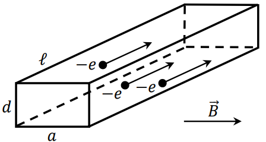

\large{ МИНИСТЕРСТВО НА ОБРАЗОВАНИЕТО И НАУКАТА
**НАЦИОНАЛНО ПРОЛЕТНО СЪСТЕЗАНИЕ ПО ФИЗИКА**
**11-12 март 2017 г., Вършец**
**Специална тема**
} \end{center}
Задача 1. Спътник
а) Намерете налягането на въздуха като функция на височината над морското равнище. Може да приемете, че температурата на въздуха не се променя. Моларната маса на въздуха е . Налягането на морското равнище е . Универсалната газова константа е . Земното ускорение на морското равнище е . Радиусът на Земята е . [2,5 т.]
б) Големината на силата на съпротивление, която действа на някакъв обект при неговото движение в атмосферата, е от вида , където е безразмерен коефициент, е плътността на въздуха на съответната височина над морското равнище, е лицето на максималното напречно сечение на обекта, а е големината на скоростта, с която той се движи. Чрез анализ на размерностите намерете неизвестните степени , и . [1 т.]
Кълбовиден спътник има маса и радиус . Спътникът се движи приблизително по кръгова орбита на височина над морското равнище. Разредената земна атмосфера оказва върху спътника сила на съпротивление като в подточка б), с коефициент . Числените стойности на константите, които ще са ви необходими, са дадени по-долу.
в) Определете периода , за който спътникът прави една пълна обиколка по своята орбита около Земята. [0,8 т.]
г) Намерете мощността , която силата на съпротивление оказва върху спътника. За определяне на съответната плътност на въздуха използвайте формулата, която сте получили в подточка а). [0,7 т.]
д) Силата на съпротивление принуждава спътника да се движи по спиралообразна крива. Въпреки това моментното му движение може да се апроксимира достатъчно добре като движение по окръжност с бавно намаляващ радиус . Изразете пълната механична енергия на спътника чрез масата му и неговата моментна големина на скоростта . Като използвате израза за мощността на силата на съпротивление, получен в подточка г), намерете (големината на тангенциалното ускорение на спътника). Намалява или расте големината на скоростта на спътника? [1,5 т.]
е) Като използвате израза за , получен в подточка д), определете ъгловото ускорение на сателита. [2,5 т.]
ж) Оценете изменението (спрямо първоначалната височина ) на височината на спътника над морската повърхност, породено от силата на съпротивление за време (една обиколка на спътника около Земята). [1 т.]
\begin{itemize} \item ; ; - произволни константи \item Числени стойности на физични константи:
$ T = 288 \mathrm{~K}$; $ \mu = 29,0 \mathrm{~g/mol}$; $ p_0 = 101 \mathrm{~kPa}$;
$ R = 8,31 \mathrm{~J/mol.K}$; $ g = 9,81 \mathrm{~m/s^2}$; $ R_\text{З} = 6,37. 10^6 \mathrm{~m}$.
\end{itemize}
Задача 2. Модел на Друде, закон на Ом и ефект на Хол.
\begin{wrapfigure}{l}{0.40\textwidth} 
\end{wrapfigure}
Моделът на Друде дава просто и сравнително добро описание на движението на свободните електрони в проводници при постоянно външно напрежение между двата края на проводника. Всеки електрон се разглежда като класическа частица със заряд , на която действа сила на съпротивление, пропорционална на скоростта на електрона: , където е положителна величина, която характеризира взаимодействието между електрона и решетката от положителни йони. Разглеждаме меден проводник с дължина и правоъгълно напречно сечение с размери и , както е показано на фигурата. Плътността на медта е , а моларната ѝ маса е . Числото на Авогадро е . Първоначално върху проводника не е приложено външно магнитно поле.
а) Намерете големината на постоянната дрейфова скорост , с която се движат електроните, след като е изминало достатъчно дълго време от затварянето на веригата. [2,5 т.]
б) Броят на свободните електрони в проводника е равен на броя медни йони. На колко е равна големината на електричния ток , който протича между двата края на проводника под действие на приложеното напрежение? Определете съответното електрично съпротивление на проводника в модела на Друде. [3 т.]
в) Нека да приложим постоянно външно магнитно поле , което е ориентирано напречно на дължината на проводника, както е показано на фигурата. Под действие на магнитното поле се индуцират заряди върху две срещуположни околни стени на проводника (ефект на Хол). Коя стена се зарежда положително? Намерете Холовото напрежение , което се създава между двете заредени околни стени. [2,5 т.]
г) Намерете колко е общият индуциран заряд върху положително заредената околна стена на проводника. Може да пренебрегнете ефектите, които произтичат от крайната дължина на проводника. Диелектричната проницаемост на вакуума е . [2 т.]
Задача 3. Физика на XX век.
Част I Протон с кинетична енергия се удря еластично в друг неподвижен протон, така че след сблъсъка частиците се движат на равни ъгли от двете страни на посоката на движение на първоначално налитащия протон. Пресметнете ъгъла между посоките на движение на частиците след удара. [3 т.]
Част II Хелиев атом ( протона в ядрото) се намира в основно състояние. Като използвате атомния модел на Бор и принципа за неопределеност на Хайзенберг:
а) оценете разстоянието от ядрото, на което се намират електроните; [3 т.]
б) оценете енергията на двата електрона в основното състояние; [1 т.]
в) определете разстоянието до ядрото , на което се намира единственият останал електрон след еднократна йонизация на хелиевия атом; [1 т.]
г) намерете приблизително каква минимална енергия е необходима за еднократната йонизация на атома; [1,5 т.]
д) направете оценка на минималната енергия , която е необходима за двукратна йонизация на хелиевия атом. [0,5 т.]
Физични константи: маса на протона , скорост на светлината във вакуум , заряд на електрона , маса на електрона , диелектрична проницаемост на вакуума , константа на Планк .